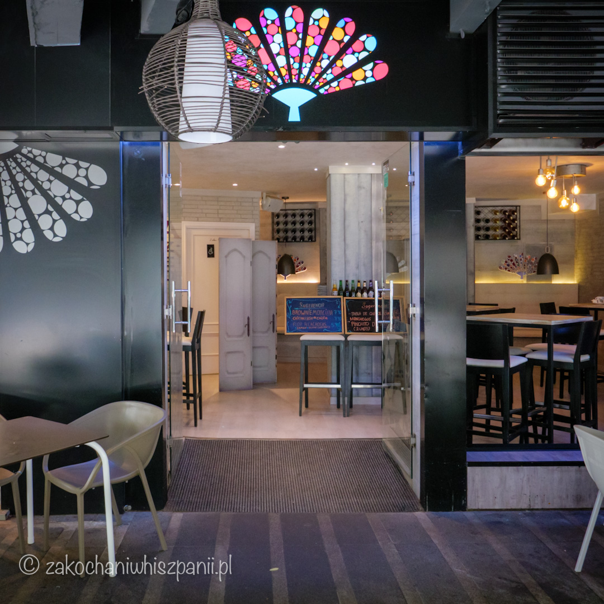
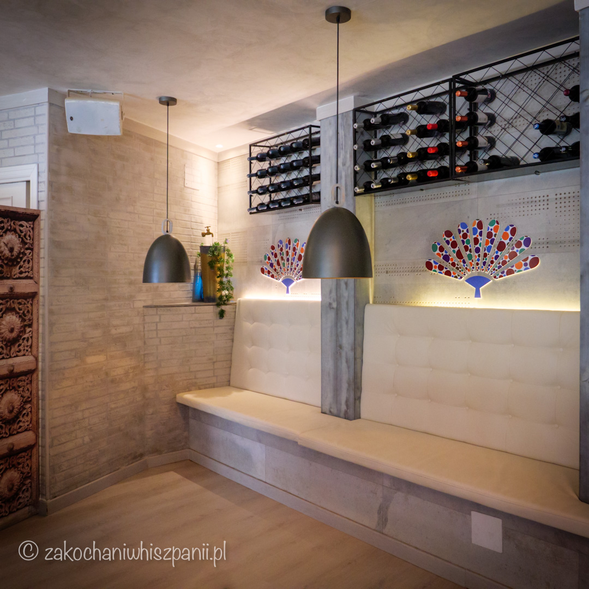

Restauracja Zabor Feten
Gdzie zjeść w Torremolinos na Costa del Sol
Ostatnio pisałam o tym co warto zobaczyć w Torremolinos? Uważam, że koniecznie trzeba odwiedzić restaurację Zabor Feten. Jeśli tylko chcesz spróbować kuchni hiszpańskiej w nowoczesnym wydaniu? To miejsce spełni Twoje oczekiwania w 100%.

Wystrój w lokalu jest również nowoczesny. Restauracja Zabor Feten prowadzona jest przez młodych, miłych ludzi, którzy sprawiają, że atmosfera w lokalu jest bardzo przyjazna. Czuliśmy się tu bardzo dobrze przyjęci. Spokojnie możesz przyjść na randkę, jak również na spotkanie z rodziną. Na portalu Tripadvisor, restauracja ma ocenę 5,0 na 162 opinie.
Restauracja Zabor Feten znajduje się przy ulicy (hiszp. calle) Calle de la Cruz 10 w Torremolinos.

Podczas ubiegłorocznych wakacji w okolicach Malagi, udało nam się odwiedzić kilkukrotnie restaurację Zabor Feten w Torremolinos. Dlaczego? Jedzenie było bardzo smaczne i byliśmy ciekawi kolejnych dań. W trakcie naszych wycieczek do Hiszpanii poznaliśmy podstawowe smaki kuchni hiszpańskiej, więc jesteśmy otwarci na próbowanie tradycyjnych hiszpańskich potraw w nowej odsłonie.
Co zamówiliśmy? Dla Natalki mini hamburger z domowymi frytkami, jako tapas patatas bravas, które są klasykiem kuchni hiszpańskiej.
Dla siebie zamówiłam jako danie główne ośmiornicę (Pulpo Fetén) z ziemniaczkami i kremowym sosem z batata, Krzyś zamówił łososia ze szparagami.
Skusiliśmy się również na desery: tarta de queso (sernik), brownie i muerte por chocolate - kawałek bardzo czekoladowego ciasta. Wszystko było smaczne. Do rachunku zaproponowano nam po małym kieliszku domowej ziołowej nalewki.

Podczas kolejnej wizyty w Zabor Feten zamówiliśmy Chichilla de Morcilla, czyli pikantną paprykowaną kaszankę na pieczywie, Pinchitos de Pluma - najbardziej ceniony kawałek mięsa ze świni iberyjskiej na chrupiącym chlebie z serem Manchego i papryczką Padron.
Kolejnym daniem było Taquito de Pulled Pork, czyli dwa małe chrupiące kukurydziane tacos z guacamole, szarpaną wieprzowiną z sosem barbecue, pico de gallo (mieszanka warzyw) i limonką.
Jako dopełnienie całości zamówiliśmy jeszcze sałatkę z kurczakiem i sałatkę La Marinera z wędzonym łososiem i awokado. Muszę to powtórzyć, ale wszystkie zamówione przez nas dania zaskoczyły nas pozytywnie.
Produkty, z których zostały przygotowane nasze dania, były świeże i dobrej jakości. Wszystko, co zamówiliśmy, było fenomenalne i podane w apetyczny sposób. To jest takie miejsce, do którego wraca się z miłymi wspomnieniami. Pisząc o Zabor Feten, aż zgłodniałam :)
Zabor Feten - podsumowanie
Podsumowując: obsługa w lokalu szybka, sprawna 10/10, jedzenie 10/10, atmosfera 10/10.
Jedno jest pewne, chętnie tu wrócimy.
Godziny otwarcia: wtorek-piątek: 20:00-24:00, sobota- niedziela 13:00-24:00
Adres: Calle de la Cruz, 10 Torremolinos
Najnowsze wpisy


Tagi